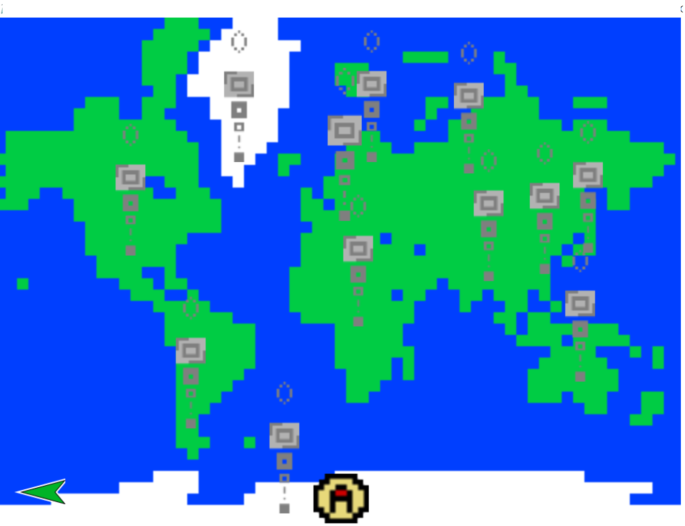

AtlasExplorer (2017): was AtlasStudios version of Google Maps but with some playful features like PokeStops that would tell you about the certain building or place that it was located at. Programmed in the Snap! programming language.